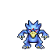
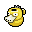
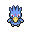

Pokédex / #055

Golduck #055
Water
The forelegs are webbed, helping to make it an adept swimmer. It can be seen swimming elegantly in lakes, etc.
Generation 1 · Kanto

Stats
| Attack | 82 | |
|---|---|---|
| Defense | 78 | |
| Sp. Atk | 95 | |
| Sp. Def | 80 |
In the wild
| Wild level | 55–65 |
|---|---|
| HP | 80 |
| Experience | 15 |
| Egg groups | Water 1, Field |
Evolution
- Evolves from Psyduck at level 35.
Moves
| Level | Move | Type | Category | Power | Energy | Cooldown | Effect | |
|---|---|---|---|---|---|---|---|---|
| 1 | Tackle | Normal | Physical | 15 | 15 | 1s | Tackle is one of the most common and basic moves a Pokemon learns. It deals damage with no additional effects. | |
| 5 | Scratch | Normal | Physical | 40 | 40 | 6s | Scratch inflicts damage and has no secondary effect. | |
| 10 | Water Gun | Water | Special | 40 | 45 | 9s | Water Gun inflicts damage and has no secondary effect. | |
| 15 | Confusion | Psychic | Special | 50 | 60 | 12s | Confusion deals damage and has a 10% chance of confusing the target. | |
| 20 | Water Pulse | Water | Special | 60 | 65 | 9s | Water Pulse deals damage and has a 20% chance of confusing the target. | |
| 25 | Fury Swipes | Normal | Physical | 18 | 45 | 9s | Fury Swipes inflicts damage, hitting 2-5 times per use. | |
| 30 | Disable | Normal | Status | – | 100 | 120s | Disable causes the previous move the target used to be disabled for 100 seconds. If the target has not used any move, then will be random. | |
| 40 | Amnesia | Psychic | Status | – | 75 | 60s | Amnesia raises the user's Special Defense by two stages. | |
| 45 | Psychic | Psychic | Special | 90 | 100 | 21s | Psychic deals damage and has a 10% chance of lowering the target's Special Defense by one stage. | |
| 50 | Aqua Tail | Water | Physical | 90 | 90 | 14s | Aqua Tail deals damage and has no secondary effect. | |
| 55 | Psybeam | Psychic | Special | 65 | 70 | 16s | Psybeam deals damage and has a 10% chance of confusing the target. | |
| 60 | Hydro Pump | Water | Special | 110 | 120 | 27s | Hydro Pump inflicts damage and has no secondary effect. | |
| 65 | Zen Headbutt | Psychic | Physical | 80 | 80 | 15s | Zen Headbutt deals damage and has a 20% chance of causing the target to flinch. | |
| 70 | Future Sight | Psychic | Special | 120 | 120 | 15s | Future Sight deals damage, but does not hit until two turns after the move is selected. |
Field abilities
DigRock ClimbStrengthWaterfallSurfDiveRock SmashHeadbutt
Special abilities
DampCloud Nine
Egg moves
Clear SmogConfuse RayCross ChopEncoreForesightFuture SightHypnosisMud BombPsybeamRefreshSecret PowerSimple BeamSleep TalkSynchronoiseYawn
Technical machines
Aerial AceBideBlizzardBody SlamBrick BreakBubblebeamCalm MindCounterDouble EdgeDouble TeamDynamic PunchFocus PunchFury CutterHailHeadbuttHyper BeamIce BeamIce PunchIcy WindIron TailLight ScreenMega KickMega PunchMimicMud SlapPay DayPsychicRageRain DanceRestSeismic TossSkull BashSoftboiledSubmissionSubstituteSwiftTake DownToxicWater GunWater Pulse
Drops
| Item | Amount | Chance | |
|---|---|---|---|
| water gem | 1–13 | 97.2% | |
| water pendant | 1 | 54.7% | |
| pot of water | 1 | 35% | |
 | psyduck mug | 1 | 29.2% |
| red apple | 1–5 | 5% | |
| Splash Plate | 1 | 0.1% | |
 | golduck doll | 1 | 0.1% |
| held mystic water | 1 | 0.02% | |
| TM 12 | 1 | 0.01% | |
| TM 27 | 1 | 0.01% |